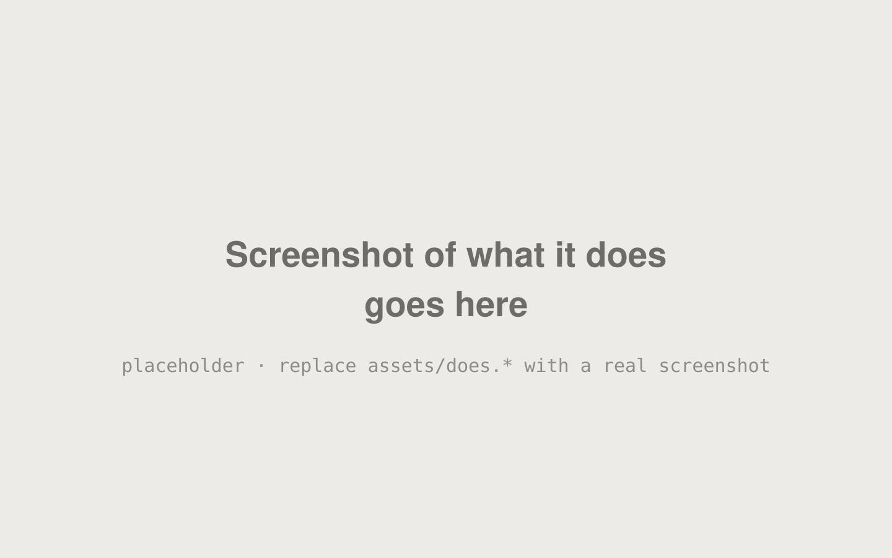
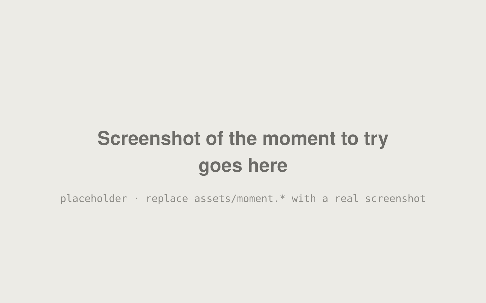

Product name
One sentence: what it does, in the team's own words.
For the one kind of person it is for
Team name
One sentence: what it does, in the team's own words.
For the one kind of person it is for
The problem
One real person, by first name and what they do
What goes wrong for them today, in two short sentences.

What it does

Try this
The one thing to try that proves it is real.
How it is built
Why vote for us
Why it deserves your vote, in one line.
First member · Second member · Third member